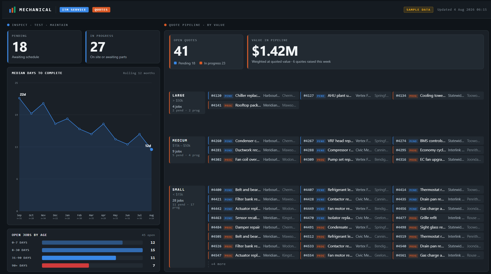
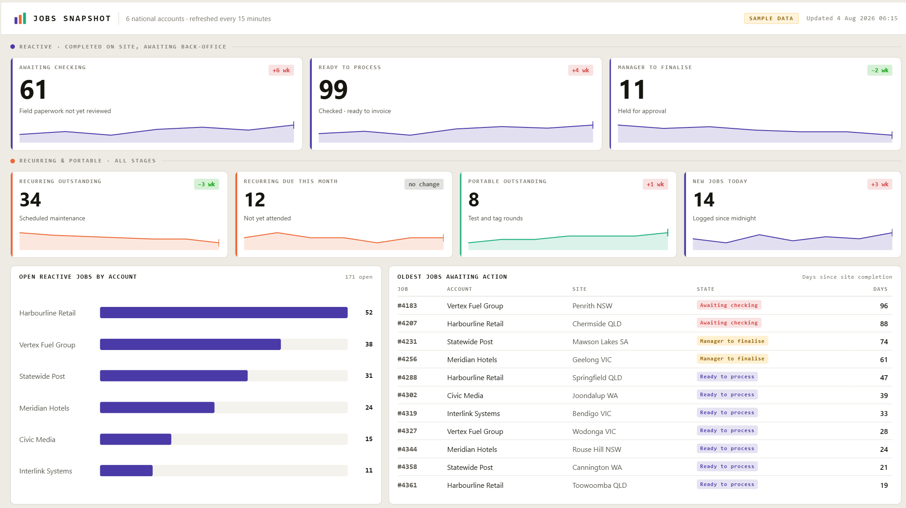
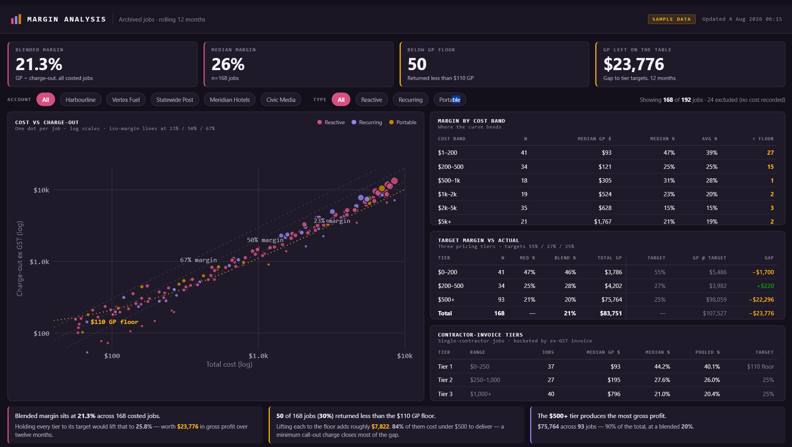

Custom business dashboards: live numbers, not month-end reports
A custom dashboard is worth building when the numbers you run the business on already exist in your systems but take someone hours every week to assemble. It replaces the export-and-format cycle with a view that is correct the moment it is opened — and it is worth building only once the underlying data is consistent enough to trust.
What it replaces
In most small and medium businesses the reporting job is a person. Someone exports from the job management system, exports from the ledger, pastes both into a spreadsheet, fixes the customer names that do not match, and circulates a PDF. By the time it lands it describes last week.
- Work in progress — jobs completed but not yet invoiced, and how long they have been sitting there.
- Quote pipeline — what is out, what has gone quiet, what is worth chasing today.
- Utilisation — who is booked, who is not, and where the week is actually going.
- Job profitability — quoted against actual, while the job is still open enough to do something about it.
None of that is new information. It is all already in your systems. The cost is the assembly, and the assembly is what a dashboard removes.
What has been built
Kontrol AI builds and maintains a role-based reporting portal for a multi-trade contracting group — four dashboards on a Next.js application deployed to Vercel, with access controlled by role so supervisors, office staff and directors each see the view that belongs to them rather than a single screen that suits nobody.
The same client runs wall-mounted displays in its offices, driven by Raspberry Pi units, showing live job status where the team can see it without opening anything or logging in.
The three boards below are sample layouts built on fictional accounts, not a client's live data. They show the shape of the reporting rather than anyone's numbers. Click any board to open it full size.

assets/dashboards/mechanical.png
Inspection work and the quote pipeline on one board — with median days to complete trending down, and every open quote sized and attributed.

assets/dashboards/jobs-snapshot.png
Where jobs are stuck between site completion and invoice, and how long they have been there — the queue that quietly holds up cash.

assets/dashboards/margin-analysis.png
Cost against charge-out for every job, so the work priced below the floor is visible as a pattern rather than a surprise at year end.
Where the data comes from
From the platforms already in use. A job management system such as SimPRO, an accounting ledger, a CRM, and — almost always — a spreadsheet that one person maintains and the whole business quietly depends on. Data is read through each platform's API on a schedule, or as records change where that is supported. Nothing is re-keyed, and no source system is replaced.
The dashboard is the easy half. The hard half is that your systems disagree with each other — the same customer under two names, jobs that exist in one platform and not the other, a status field three people use three different ways. A dashboard built on top of that does not hide the problem, it publishes it. Reconciling the data is the actual project, and any quote that skips it is quoting the wrong job.
How it is scoped
Start with the free 60-minute workflow review. That session establishes which numbers are genuinely being assembled by hand, what state the source data is in, and whether a dashboard is the right answer at all — sometimes the honest recommendation is a spreadsheet and a scheduled export.
If a build makes sense, it is scoped and quoted from there, with an ongoing component covering hosting, monitoring and changes as the business shifts. Nothing is charged before a scope is agreed.
Common questions
What is a custom business dashboard?
A custom business dashboard is a live view of the numbers a business actually runs on — jobs in progress, work sitting unbilled, quotes gone quiet, technician utilisation — pulled directly from the systems that already hold that data, rather than assembled by hand into a spreadsheet each week.
The distinction that matters is between a report and a dashboard. A report is a snapshot someone builds; by the time it is circulated it describes the past. A dashboard is queried the moment it is opened, so the number is current and nobody spent Monday morning producing it. For most small and medium businesses the data already exists in a job management system, an accounting ledger and a spreadsheet or two. The work is not collecting it. The work is joining it and keeping it honest.
Why not just use Power BI or Excel?
Often you should. If one person needs to explore data occasionally and can already get an export out of the source system, Power BI or a well-built spreadsheet is cheaper and faster than anything custom.
A custom build earns its keep at the point where those tools start to strain: when the view needs to be permanently live rather than refreshed, when different people must see different slices of the same data, when it has to run unattended on a screen on a wall, or when the numbers require logic the source systems cannot express. The honest test is whether the reporting is a person's recurring job. If someone spends hours a week assembling the same view, that is a build. If they open it twice a month and poke at it, that is a spreadsheet.
Where does the dashboard data come from?
From the systems already in use — a job management platform such as SimPRO, an accounting ledger, a CRM, and often a spreadsheet that someone maintains and everyone depends on. Data is read through each platform's API on a schedule, or streamed as records change where the platform supports it. Nothing is re-keyed and no source system is replaced.
That matters because the most common reason dashboard projects fail is that they assume a tidy single source of truth exists. It usually does not. Reconciling how two systems disagree — different customer names, jobs that exist in one and not the other, a status field used inconsistently by three people — is the real work, and it has to happen before any chart is worth looking at.
How long does a dashboard take to build?
A single focused view against a clean data source is a matter of weeks, not months. A multi-view portal with role-based access takes longer, and the variable is almost never the interface — it is how much reconciliation the underlying data needs before the numbers can be trusted.
The sequence that works is to build one view, put it in front of the people who will use it, and let it run for a few weeks before adding anything. That surfaces the disagreements between systems early, while the build is small enough to change cheaply, and it stops a business from commissioning six dashboards when the second one would have answered the question.
Book a free 60-minute workflow review. We map where your admin hours are going, what state your data is actually in, and whether a dashboard is worth building. No obligation, and nothing is charged before a scope is agreed.